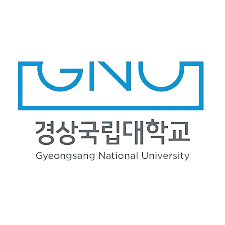

<section class="page-section bg-primary pb-5 d-flex align-items-center justify-content-center" id="about" style="min-height: 100vh;">
    <div class="container px-4 px-lg-5 mt-2" id="aboutme" style="margin-left: 0; margin-right: 0;">
        <div class="row gx-4 gx-lg-5 justify-content-center">
            <div class="col-lg-12 text-center" style="position: absolute; top: 50px; left: 50%; transform: translateX(-50%);">
                <h1 class="text-white">About me</h1>
                <hr class="divider divider-light mx-auto" style="width: 50%;" />
            </div>
        </div>
        <div class="row gx-4 gx-lg-5 justify-content-center" style="margin-top: 150px;">
            <!-- 박정은에 관한 정보 -->
            <div class="mt-3 p-5 rounded shadow custom-div" style="width: 100%; margin-right: auto; margin-left: 11.5%; margin-bottom: 40px;">
                <h1 class="text-primary mb-4" style="font-size: 2.5rem; font-weight: bold; text-align: center;">Me</h1>

                <div class="image-container2 d-flex flex-wrap justify-content-center align-items-center" style="margin-top: 80px; margin-left: 100px;">
                    <div class="mb-4 mx-3 text-center" style="margin-top: 20px;"> <!-- text-center 클래스 추가 -->
                        <i class="fas fa-user fa-3x text-primary"></i><br>
                        <h2 class="h4 mb-2 text-primary" style="margin-top: 55px;">이름</h2>
                        <h3 class="text-primary mb-0" style="margin-top: 20px;">박정은</h3>
                    </div>
                    <div class="mb-4 mx-3 text-center"> <!-- text-center 클래스 추가 -->
                        <i class="far fa-calendar fa-3x text-primary" style="margin-top: 20px; margin-bottom: 35px;"></i>
                        <h2 class="h4 mb-2 text-primary" style="margin-top: 20px; margin-bottom: 20px;">생년월일</h2>
                        <h3 class="text-primary mb-0">1999.02.07</h3>
                    </div>
                    <div class="mb-4 mx-3 text-center custom-margin"> <!-- text-center 클래스 추가 -->
                        <i class="fas fa-mobile-alt fa-3x text-primary" style="margin-top: 20px; margin-bottom: 25px;"></i>
                        <h2 class="h4 mb-2 text-primary">연락처</h2>
                        <h3 class="text-primary mb-0">010-8517-1179</h3>
                    </div>
                    <div class="mb-4 mx-3 text-center"> <!-- text-center 클래스 추가 -->
                        <i class="fas fa-laptop fa-3x text-primary" style="margin-top: 20px; margin-bottom: 15px;"></i>
                        <h2 class="h4 mb-2 text-primary">이메일</h2>
                        <h3 class="text-primary mb-0">shahmaran0207@naver.com</h3>
                    </div>
                </div>
            </div>

            <!-- Interview 파트 -->
            <div class="col-lg-12 text-center">
                <div class="mt-3 p-5 rounded shadow custom-div" style="width: 100%; margin-right: auto; margin-left: 11%; margin-bottom: 40px;">
                    <h1 class="text-primary mb-4" style="font-size: 2.5rem; font-weight: bold; text-align: center;">Interview</h1>

                    <h1 class="text-primary mb-4" style="font-size: 2rem; font-weight: bold; text-align: left; margin-top: 80px;">Q. 백엔드 개발자를 선택한 이유?</h1><br>
                    <p class="text-primary" style="margin-left: 50px; font-size: 1.1rem; line-height: 1.8; text-align: left;">

                        백엔드 개발자를 선택한 이유는 처음 빅데이터 학과에 입학했을 때는 데이터 분석에 관심이 있었지만,<br> 졸업작품으로 웹사이트를 개발하며 백엔드 개발의 매력에 빠지게 되었기 때문입니다. <br>
                        그 과정에서 서버와 데이터베이스 연동, API 설계 등 백엔드 개발의 핵심적인 요소들을 경험하며 기술적인 도전의 즐거움과 성취감을 느꼈습니다. <br>

                        이후 국비지원 과정을 통해 실무 중심의 교육을 받으며 팀 프로젝트를 완성해 나가는 과정을 통해 개발의 보람을 더욱 깊이 느꼈습니다. <br>
                        이를 통해 백엔드 개발에 필요한 기술을 체계적으로 습득하며, 이 분야가 제게 가장 잘 맞는다는 확신을 가지게 되었습니다.

                    </p>
                    <hr style="border: none; border-top: 3px solid #f4623a; margin: 40px 0;">

                    <h1 class="text-primary mb-4" style="font-size: 2rem; font-weight: bold; text-align: left;">Q. 가장 도전적인 프로젝트는?</h1><br>
                    <p class="text-primary" style="margin-left: 50px; font-size: 1.1rem; line-height: 1.8; text-align: left;">
                        가장 도전적인 프로젝트는 국비지원 과정 중 진행한 두 번째 프로젝트였습니다. <br>
                        이 프로젝트에서 저는 결제 시스템과 장바구니 시스템을 구축하며, 첫 번째 프로젝트보다 더 높은 수준의 결과물을 목표로 삼았습니다. <br>
                        특히, 첫 번째 프로젝트에서 시도하지 않았던 제품 상태 관리 기능을 추가했고, 간편 결제 시스템도 구현하려 했지만, <br>실제 사업장이 없이는 구현이 어렵다는 현실적인 한계를 깨달았습니다. <br>

                        더 나은 결과물을 만들기 위해 매일 아침부터 저녁까지 작업에 몰두하며 노력했고, 이를 통해 프로젝트 완성도와 개인적인 성장을 동시에 이룰 수 있었습니다.

                    </p>
                    <hr style="border: none; border-top: 3px solid #f4623a; margin: 40px 0;">

                    <h1 class="text-primary mb-4" style="font-size: 2rem; font-weight: bold; text-align: left;">Q. 백엔드 개발자로서의 목표는?</h1><br>
                    <p class="text-primary" style="margin-left: 50px; font-size: 1.1rem; line-height: 1.8; text-align: left;">

                        백엔드 개발자로서의 목표는 '기본'을 탄탄히 갖춘 핵심 인재로 성장하는 것입니다. <br>
                        복수전공과 국비지원 과정을 통해 다양한 프로젝트를 경험하며 실무 역량을 쌓았고, 이를 바탕으로 입사 후 3년 내에 제 능력을 한층 더 발전시키고자 합니다. <br>
                        프로젝트 기획과 개발 역량을 체계적으로 향상시키며, 회사에 실질적으로 기여할 수 있는 중요한 역할을 맡는 것을 목표로 하고 있습니다. <br>
                        주어진 업무에 최선을 다하는 동시에 새로운 도전과 시도를 통해 회사와 함께 지속적으로 성장하겠습니다.

                    </p>
                </div>

                <!-- 대학 및 교육이수 내용 -->
                <div class="mt-3 p-5 rounded shadow custom-div" style=" margin-right: auto; margin-left: 11%; padding: 70px 80px; margin-bottom: 40px; width: 100%;"> <!-- width 100%로 변경 -->
                    <h1 class="h4 text-primary mb-4 title">Study</h1><br>
                    <div class="image-container3 d-flex flex-wrap justify-content-center align-items-center">
                        <div class="mb-4 mx-3">
                            <div class="mb-2"></div>
                            <h2 class="h4 mb-2 text-primary">경상국립대학교<br> - 경영학과 / 빅데이터 전공</h2>
                        </div>
                        <div class="mb-4 mx-3">
                            <div class="mb-2"></div>
                            <h2 class="h4 mb-2 text-primary">KG아이티뱅크<br> - C, JAVA, SPRING, JSP,
                                자료구조,<br>전자정부기반 e커머스 융합 sw개발자 양성과정</h2>
                        </div>
                    </div>
                </div>

                <!-- 자격증 -->
                <div class="mt-3 p-5 rounded shadow custom-div" style="width: 100%; margin-right: auto; margin-left: 11%; margin-bottom: 40px;"> <!-- width 100%로 변경 -->
                    <h1 class="h4 text-primary mb-4 title">Certificate</h1><br>
                    <div style="gap: 95px" class="image-container d-flex flex-wrap justify-content-center align-items-center">
                        <div class="mb-4 mx-3">
                            
                            <h2 class="h4 mb-2 text-primary" style="margin-top: 50px">정보처리기사</h2>
                        </div>
                        <div class="mb-4 mx-3" style="margin-top: 20px">
                            
                            <h2 class="h4 mb-2 text-primary" style="margin-top: 50px">ADsP</h2>
                        </div>
                        <div class="mb-4 mx-3 custom-margin">
                            
                            <h2 class="h4 mb-2 text-primary" style="margin-top: 60px">SQLD</h2>
                        </div>
                        <div class="mb-4 mx-3">
                            
                            <h2 class="h4 mb-2 text-primary">OPIC - IM2</h2>
                        </div>
                        <div class="mb-4 mx-3">
                            
                            <h2 class="h4 mb-2 text-primary" style="margin-top: 50px">AFPK</h2>
                        </div>
                    </div>
                </div>

                <!-- 대외활동 -->
                <div class="mt-3 p-5 rounded shadow custom-div" style="padding: 70px 40px; margin-right: auto; margin-left: 11%; margin-bottom: 40px; width: 100%;">
                    <h1 class="h4 text-primary mb-4 title">International activity</h1><br>
                    <div style="gap: 85px" class="image-containera d-flex flex-wrap justify-content-center align-items-center">
                        <div class="mb-4 mx-3">
                            <div class="mb-2"></div>
                            <h2 class="h4 mb-2 text-primary">N돌핀</h2>
                        </div>
                        <div class="mb-4 mx-3" style="margin-top: 20px">
                            <div class="mb-2"></div>
                            <h2 class="h4 mb-2 text-primary">YLC</h2>
                        </div>
                        <div class="mb-4 mx-3 custom-margin">
                            <div class="mb-2"></div>
                            <h2 class="h4 mb-2 text-primary" style="margin-top: 60px;">넥서스와 함께하는<br> 파란만장 플리마켓</h2>
                        </div>
                        <div class="mb-4 mx-3">
                            <div class="mb-2"></div>

                            <h2 class="h4 mb-2 text-primary" style="margin-top: 60px">삼성증권 주단기<br> 서포터즈</h2>
                        </div>
                    </div>
                </div>

                <!-- 수상 목록 -->
                <div id="awards-box" class="mt-3 p-5 rounded shadow custom-div" style=" margin-right: auto; margin-left: 11%; padding: 30px 40px; margin-bottom: 40px; width: 100%;">
                    <h1 class="h4 text-primary mb-4 title">Awards</h1>
                    <div style="gap: 80px" class="image-container11 d-flex flex-wrap justify-content-center align-items-center">
                        <div class="mb-4 mx-3" style="margin-top: 20px">
                            <div class="mb-2"></div>
                            <h2 class="h4 mb-2 text-primary" style="margin-top: 70px">파이썬을 활용한<br> 빅데이터분석<br> 경진대회<br>  - 장려상</h2>
                        </div>
                        <div class="mb-4 mx-3" style="margin-top: 20px">
                            <div class="mb-2"></div>
                            <h2 class="h4 mb-2 text-primary" style="margin-top: 70px">파이썬을 활용한<br> 빅데이터분석<br> 경진대회<br> - 우수상</h2>
                        </div>
                        <div class="mb-4 mx-3 custom-margin">
                            <div class="mb-2"></div>
                            <h2 class="h4 mb-2 text-primary" style="margin-top: 60px">서민금융진흥원<br> 영상 공모전<br> - 입상</h2>
                        </div>
                        <div class="mb-4 mx-3">
                            <div class="mb-2"></div>
                            <h2 class="h4 mb-2 text-primary" style="margin-top: 105px">부산금융중심지<br> 영상 공모전<br>  - 장려상</h2>
                        </div>
                        <div class="mb-4 mx-3">
                            <div class="mb-2"></div>
                            <h2 class="h4 mb-2 text-primary" style="margin-top: 35px">로켓피치 경연대회  - 특별상</h2>
                        </div>
                    </div>
                </div>

                <div class="container text-center mt-5" style="width: 1600px; flex-wrap: wrap; margin-right: auto; margin-left: 8.5%" >
                    <div class="p-4 rounded shadow custom-div3">
                        <h2 style="margin-top: 20px; margin-bottom: 4px !important; color: #f4623a;">My GitHub Contribution Graph</h2>
                        
                    </div>
                </div>

            </div>
        </div>
    </div>
</section>